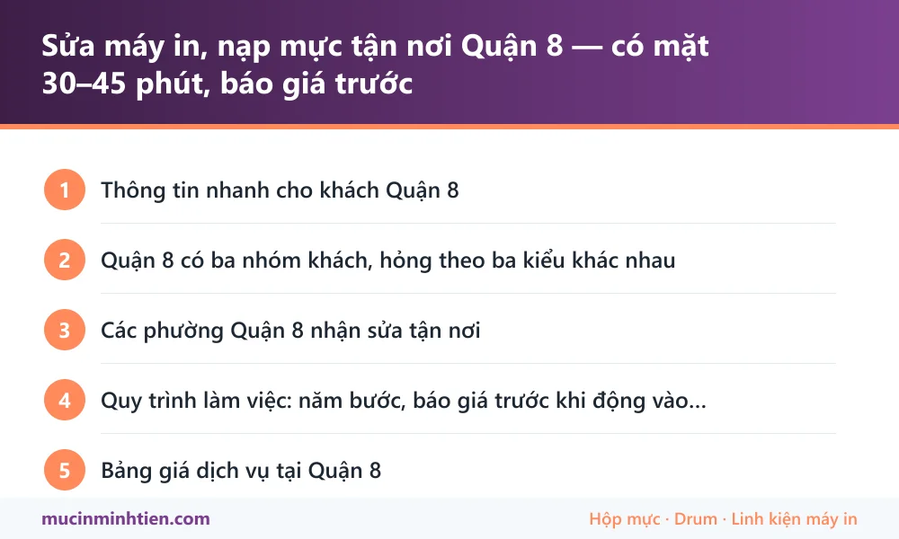

Sửa máy in, nạp mực tận nơi Quận 8 — có mặt 30–45 phút, báo giá trước
Minh Tiến nhận sửa máy in và nạp mực tận nơi toàn Quận 8 — Chánh Hưng, Phú Định, Bình Đông, Bình Phú và khu chợ đầu mối Bình Điền. Kỹ thuật viên có mặt trong 30–45 phút giờ hành chính, kiểm tra và in thử trước mặt khách rồi mới báo giá. Nạp mực từ 80.000đ, vật tư báo đúng giá theo mã trong kho.
Thông tin nhanh cho khách Quận 8
| Hạng mục | Chi tiết |
|---|---|
| Thời gian có mặt | 30–45 phút trong giờ hành chính. Khu Bình Điền và bến Bình Đông nhận cả ca sớm và ca tối theo hẹn |
| Phường nhận sửa | Chánh Hưng, Phú Định, Bình Đông, Bình Phú — tương ứng các phường 1–16 cũ của Quận 8 |
| Trục đường hay đi | Phạm Thế Hiển, Tạ Quang Bửu, Âu Dương Lân, Dương Bá Trạc, Bến Bình Đông, Võ Văn Kiệt, Nguyễn Văn Linh |
| Làm được tại chỗ | Nạp mực, thay drum – gạt – trục từ – bao lụa, vệ sinh máy, gỡ kẹt giấy, thay quả đào, cài driver, chia sẻ máy in qua mạng |
| Phải mang về xưởng | Thay trọn cụm sấy, sửa bo formatter, sửa nguồn — thường 1–2 ngày, có máy cho mượn nếu cần in gấp |
| Loại máy nhận | Laser, phun, đa năng, máy in bill nhiệt ở sạp chợ, máy in kim in phiếu nhiều liên |
Quận 8 có ba nhóm khách, hỏng theo ba kiểu khác nhau
Quận 8 trải dài dọc kênh Tàu Hủ và kênh Đôi, nên cùng một quận mà máy in mỗi khu lại hỏng vì lý do khác nhau. Biết trước thuộc nhóm nào thì kỹ thuật viên mang đúng đồ ngay lần đầu.
- Chợ đầu mối Bình Điền và các vựa quanh Phú Định: chủ yếu máy in bill nhiệt và máy in tem cân hàng, chạy liên tục từ nửa đêm tới sáng. Bệnh hay gặp là in mờ dần do đầu in bẩn, kẹt giấy do bụi và ẩm, dao cắt không đứt. Khu này gọi nhiều vào khung giờ lạ — bên mình nhận theo hẹn.
- Bến Bình Đông, khu kho vựa dọc kênh: máy in phiếu, máy in kim in nhiều liên cho giao nhận hàng. Môi trường ẩm và nhiều bụi, ruy băng và đầu kim hao nhanh.
- Nhà phố, trường học, phòng khám ở Chánh Hưng và Bình Phú: máy laser để bàn và máy đa năng cỡ nhỏ, gọi vì bản in mờ, có sọc, kẹt giấy, hoặc máy tính không nhận máy in sau khi đổi máy mới.
Riêng nhóm chợ và kho, lời khuyên thật lòng: đừng đợi máy chết hẳn giữa phiên chợ. Một lần vệ sinh đầu in và bộ kéo giấy rẻ hơn nhiều so với thay đầu in, mà lại không làm gián đoạn buổi bán hàng.
Các phường Quận 8 nhận sửa tận nơi
Từ 01/7/2025, mười sáu phường cũ của Quận 8 được sắp xếp lại thành bốn phường. Bên mình nhận toàn bộ địa bàn, ghi cả hai cách gọi để khách dễ đối chiếu:
- Phường Chánh Hưng — khu Phạm Thế Hiển, Dương Bá Trạc, Âu Dương Lân, cầu Chữ Y, các chung cư khu Giai Việt.
- Phường Bình Đông — bến Bình Đông, Tạ Quang Bửu, khu kho vựa dọc kênh Tàu Hủ.
- Phường Phú Định — khu chợ đầu mối Bình Điền, Võ Văn Kiệt đoạn cuối, giáp Bình Chánh.
- Phường Bình Phú — khu giáp Quận 6, đường Bình Phú, các tuyến hẻm dân cư đông.
Địa chỉ trong hẻm hoặc nhà dọc kênh thì nhắn vị trí bản đồ qua Zalo là nhanh nhất — nhiều tuyến ở Quận 8 số nhà xuyệt dài và hẻm thông nhau.
Quy trình làm việc: năm bước, báo giá trước khi động vào máy
- Tiếp nhận: khách gọi hoặc nhắn Zalo, đọc tên model ghi ở mặt trước máy và mô tả hiện tượng.
- Chuẩn bị vật tư: kỹ thuật viên lấy sẵn hộp mực, drum, gạt, trục từ đúng dòng máy đó từ kho rồi mới lên đường.
- Kiểm tra tại chỗ: in thử, mở máy, chỉ cho khách xem đúng chỗ hỏng.
- Báo giá: nói rõ hạng mục nào bắt buộc, hạng mục nào có thể để sau. Khách đồng ý mới làm.
- Nghiệm thu: in thử lại trước mặt khách, dọn sạch chỗ làm, ghi bảo hành theo từng hạng mục.
Không phát sinh giá sau khi đã báo. Nếu mở máy ra phát hiện thêm hư hỏng khác, kỹ thuật viên dừng lại báo trước chứ không tự làm rồi tính tiền.
Bơm mực, nạp mực, thay mực — và khi nào chỉ cần lắc hộp
Khách Quận 8 hay gọi bơm mực máy in, người khác nói nạp mực hoặc thay mực. Cùng một việc: nạp lại bột mực vào hộp cũ ngay tại chỗ, khoảng 15–20 phút.
Trước khi gọi, thử một mẹo tiết kiệm: máy báo hết mực mà bản in vẫn còn đọc được thì tháo hộp mực ra, lắc ngang vài lần rồi lắp lại — thường in thêm được vài chục trang nữa. Cách này hợp với sạp chợ và cửa hàng cần in nốt cho xong buổi bán rồi mới gọi thợ.
Nhưng lắc chỉ là giải pháp tạm. Lắc hoài mà vẫn in mờ nghĩa là hộp đã cạn thật, hoặc trục từ đã yếu — lúc đó lắc thêm cũng không cứu được, mà còn làm bột mực rơi vãi trong máy.
Bên mình nhận cả khu chợ đầu mối, nhà phố và trường học, làm tại chỗ, có hoá đơn nếu cần.
Bảng giá dịch vụ tại Quận 8
| Hạng mục | Áp dụng cho | Giá tham khảo |
|---|---|---|
| Nạp mực hộp mực laser | HP, Canon, Brother (12A, 85A, 35A, 337, TN-2380…) | 80.000 – 150.000 đ |
| Bơm mực máy in phun | Epson, Canon dòng phun | từ 60.000 đ/màu |
| Thay gạt mực | Bản in có sọc đen dọc, nền xám | từ 40.000 đ |
| Thay trục từ | Bản in mờ dần dù mực còn | từ 34.000 đ |
| Thay bao lụa | Bản in nhòe, chạm tay ra mực | từ 80.000 đ |
| Thay trống (drum) | Vệt lặp đều theo chu kỳ trên trang in | từ 120.000 đ |
| Thay lô sấy, lô ép | Kẹt giấy ở cuối đường đi, mực không bám | từ 49.000 đ tuỳ dòng máy |
| Thay quả đào, bố thắng | Máy không kéo giấy, kéo nhiều tờ | từ 90.000 đ |
| Vệ sinh máy in tận nơi | Máy ở chợ, kho nhiều bụi | từ 100.000 đ |
Giá vật tư lấy đúng theo kho — xem bảng giá 773 mã. Kỹ thuật viên kiểm tra và báo giá trước khi làm; khách đồng ý mới thay.
Vật tư mang sẵn theo xe khi tới Quận 8
Giá trên là giá vật tư thật đang có trong kho, không phải giá ước chừng. Xe đi tuyến Quận 8 mang sẵn nhóm hàng hợp với cả máy văn phòng lẫn máy ngoài chợ:
| Vật tư mang theo | Dùng cho | Ghi chú |
|---|---|---|
| Hộp mực 12A, 85A, 35A, CF226A | Canon 2900, HP 1102, HP M402 — nhóm máy để bàn phổ biến nhất | <a href="../../muc-in/hop-muc-12a/">Xem trang 12A</a> · <a href="../../muc-in/hop-muc-85a/">85A</a> |
| Gạt mực, trục từ, drum rời | Thay lẻ thay vì thay cả hộp mực | Combo 5 cây gạt 12A từ 40.000đ, trục từ 12A từ 34.000đ |
| Bao lụa, lô sấy | Bản in nhòe, kẹt giấy ở cụm sấy | Bao lụa 1200/12A 80.000đ, lô sấy tuỳ dòng từ 49.000đ |
| Quả đào, bố thắng | Máy chợ và máy kho chạy nhiều, hao nhanh nhất | Bộ quả đào Brother 2240/2321 khoảng 90.000đ |
| Giấy in nhiệt K57, K80 | Sạp chợ, quầy thu ngân dùng máy in bill | Giao kèm luôn khi đi ca, khỏi đặt riêng |
| Mực Epson 003, 664 | Máy phun ở nhà riêng, văn phòng nhỏ | <a href="../../muc-in/muc-epson-003/">Xem trang mực 003</a> |
Lỗi hay gặp ở Quận 8 và bài hướng dẫn tự xử lý
Nhiều ca chỉ cần làm theo bài là xong, không phải gọi thợ. Đọc trước cho đỡ tốn tiền:
- Máy in nhiệt in mờ — bệnh số một của máy in bill ngoài chợ
- Máy in bill không in được — kiểm tra mặt giấy nhiệt trước khi gọi thợ
- Máy in bị sọc đen dọc — gạt mực hoặc trống đã tới hạn
- Máy in không kéo giấy — quả đào bám bụi, bố thắng mòn
- Máy tính không nhận máy in — hay gặp sau khi đổi máy tính mới

trueCâu hỏi thường gặp — khách Quận 8
Quận 8 bao lâu có thợ tới?
Sạp ở chợ Bình Điền bán đêm, có nhận sửa ngoài giờ không?
Giá vật tư có phải giá ước chừng không?
Máy in kim in phiếu nhiều liên ở kho có sửa được không?
Mở máy ra thấy hỏng thêm chỗ khác thì tính tiền thế nào?
Có bán hộp mực giao tận nơi mà không cần thợ không?
Bơm mực máy in quận 8 mất bao lâu?
Thay mực máy in quận 8 tại nhà được không hay phải mang máy đi?
Khu vực phục vụ khác
- Sửa máy in, nạp mực tận nơi Quận 7 — có mặt trong 45–60 phút
- Nạp mực, sửa máy in tận nơi Quận 4 — sát trung tâm, tới nhanh
- Sửa máy in, nạp mực tận nơi Bình Chánh — Trung Sơn, Bình Hưng, Vĩnh Lộc
- Sửa máy in, nạp mực tại phường Chánh Hưng — tới trong 30 phút
- Sửa máy in, nạp mực tận nơi Nhà Bè — nhận cả khu công nghiệp Hiệp Phước